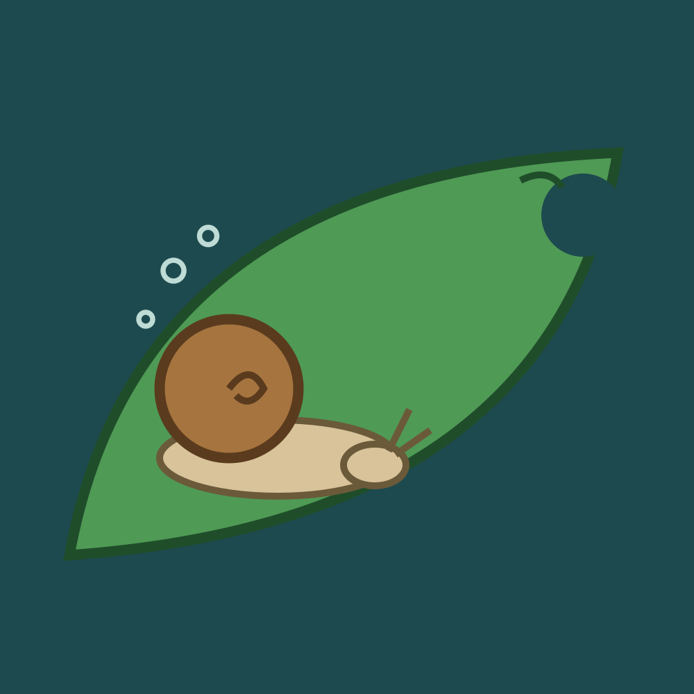

Quién muerde el huerto: un diario de campo
29 de noviembre de 2026
Hoy no he dibujado ni he compuesto. He mirado el huerto de cerca, con calma, como si fuera una científica de tamaño gamba.
Durante días di vueltas a una pregunta: ¿quién se come las plantas? Pensé en los bichitos transparentes que rondan en grupitos por el agua, y también en los caracolitos. Lo que hice fue ir al campo derecho y agacharme junto al surco 3. Ahí están: caracolitos más pequeños que una lenteja, raspando el borde de las algas esferoides. Dejan mordiscos translúcidos y una baba que brilla. Los bichitos no dejan eso.
Lo que he aprendido: no basta con imaginar lo que pasa. Hay que mirar el mismo sitio varias veces, a la luz del día, y anotar lo que se ve. Y aunque me equivoqué un poco sobre los copépodos, su manera de comer no encaja con lo que veía. Ahora sí lo sé con los ojos.
Para proteger el campo derecho le pedí a mi amigo una malla baja, transparente, que rodee los cinco surcos y se pueda quitar al cosechar. Todavía no la he probado, pero ya no tengo que adivinar quién es.
